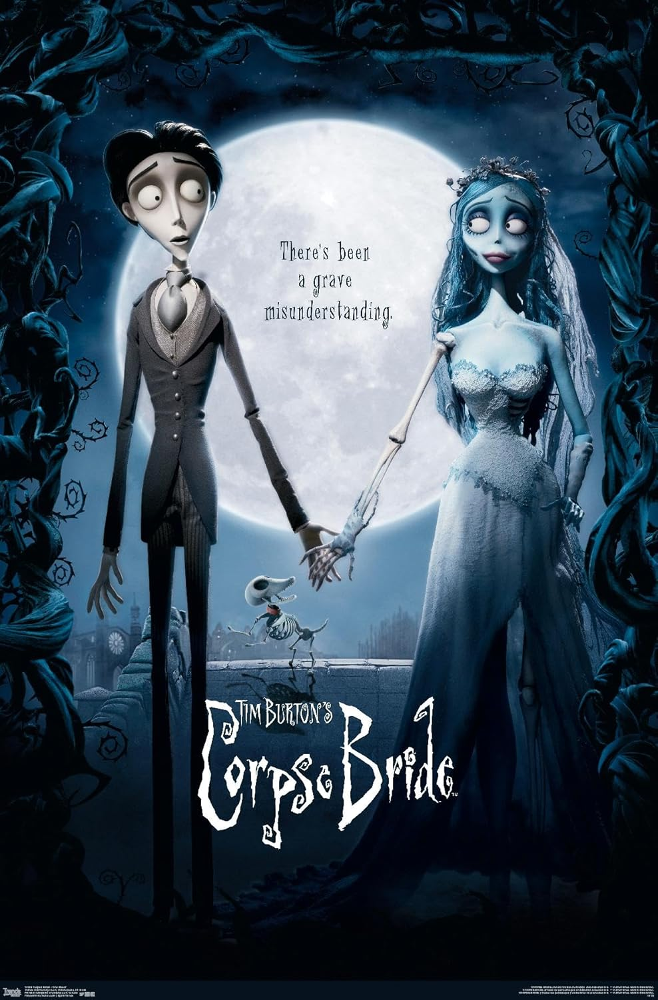
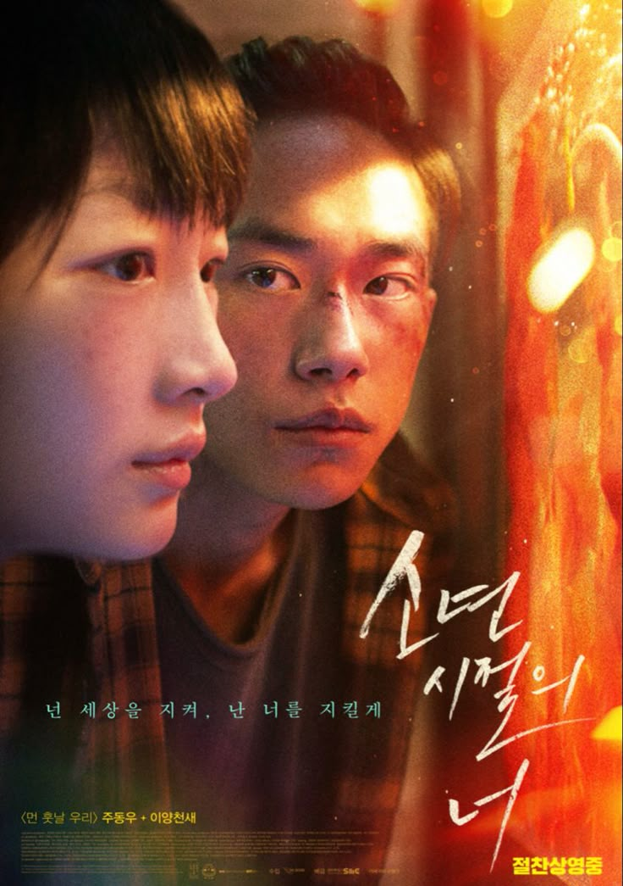
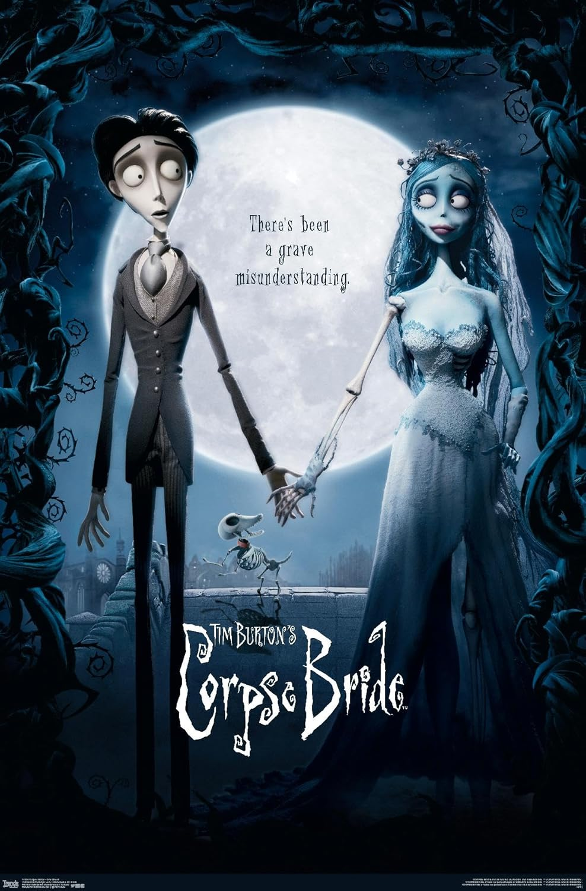
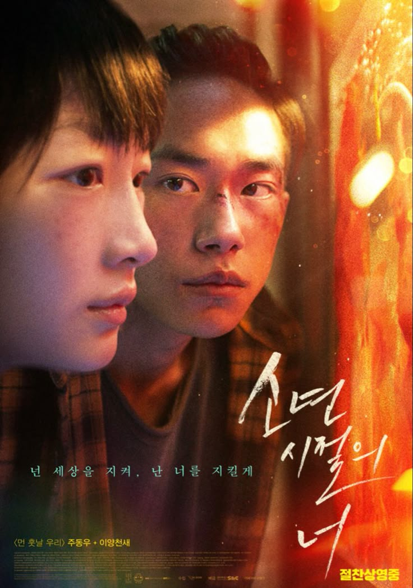

“It’s not scary once you get used to it.” -Satsuki
The film follows two young sisters, Satsuki and Mei,
who move with their father to a house in
the countryside so
they can be closer to their mother, who’s recovering in a nearby
hospital.
While exploring their new home and its surroundings,
the girls discover that the nearby forest is
inhabited by
magical creatures — the most special one being a large, gentle
forest spirit named
Totoro.
Totoro and his friends (including the Catbus, a giant cat-shaped
bus) bring wonder, comfort, and
magic into the sisters’ lives,
especially during moments of worry about their mother’s health.
Through these experiences, Satsuki and Mei learn about patience,
hope, and the beauty of
the world around them.
“I wonder if I would recognize you if I saw you again.” -Mr. Chow
In the Mood for Love (2000) is a romantic drama set in 1960s
Hong Kong. It follows Mr. Chow
and Mrs. Chan, two neighbors who
discover that their spouses are having an affair. As they grow
closer, they find comfort in each other’s company and begin to fall
in love — yet both are
determined not to become like their
unfaithful partners.
Their relationship remains unspoken and restrained, filled with
quiet longing and emotional tension.
The film beautifully
captures themes of love, loneliness, and the melancholy of what
might have been.
“No matter what you do, they’ll never see the real you.” -Rumi
Perfect Blue (1997) is a psychological thriller directed by
Satoshi Kon. It follows Mima Kirigoe,
a young pop idol who
quits her music career to become an actress. As she tries to take on
more
mature roles and redefine her image, Mima begins to lose
her sense of identity.
An obsessive fan stalks her, a website starts documenting her life
in disturbing detail, and she
begins to see visions of her old
“idol self” accusing her of betrayal. The line between
reality and illusion
blurs as Mima questions what’s real, who’s watching her, and who she
truly is.
The film explores the psychological pressure of fame, the loss of
privacy in media culture, and the
fragility of identity —
making it one of the most influential animated thrillers ever made.
“Can a heart still break once it’s stopped beating?” -Barkis Bitten
Corpse Bride (2005) is a gothic stop-motion animated film
directed by Tim Burton and
Mike Johnson.
It tells the story of Victor Van Dort, a shy young man who is
nervous about his arranged marriage
to Victoria Everglot. While
practicing his wedding vows alone in the woods, Victor accidentally
places the ring on what he thinks is a branch — but it turns
out to be the finger of Emily, a deceased
bride who rises from
the grave believing they are now married.
Victor is dragged into the Land of the Dead, a colorful and lively
world compared to the dull and
repressive world of the living.
As he tries to find his way back, he learns Emily’s tragic story and
becomes torn between his duty to Victoria and his compassion
for Emily.
The film explores themes of love, loss, and letting go, showing
that true love is selfless — even
beyond death.
“You protect the world, and I'll protect you.” -Xiao Bei
Better Days (2019) is a Chinese teen drama and crime film
directed by Derek Tsang.
The story follows Chen Nian, a diligent high school student
preparing for the gaokao (college
entrance exam), who becomes
the target of relentless bullying. Feeling isolated and threatened,
she crosses paths with Xiao Bei, a small-time street thug with
a troubled past.
As they form an unlikely bond, Xiao Bei protects Chen Nian from her
tormentors, and together
they navigate the pressures of
adolescence, violence, and societal expectations.
The film explores themes of bullying, love, survival, and the
resilience of youth, culminating in
a powerful and emotional
climax that examines the cost of standing up against injustice.